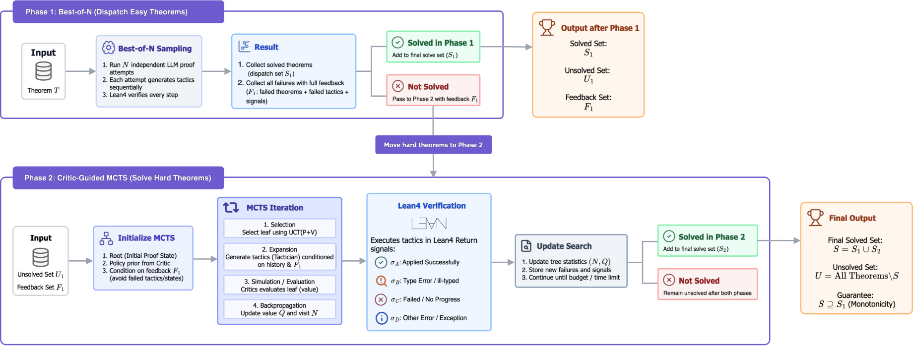

LLM agents generate Lean 4 tactics and use Lean's structured error, goal, and partial-proof feedback to guide MCTS proof search on miniF2F and a combinatorics benchmark.
Abstract
LLM-based formal provers often collapse the verifier's output into a pass/fail bit. We present VERITAS, a zero-shot framework that feeds what Lean reports (error messages with their position, verified partial proofs, and remaining goals) back into proof search. Phase 1 samples N whole proofs; Phase 2 searches a tree of verified partial proofs with a Tactician, automated step repair, a Critic that ranks states and allocates the budget, and a Retriever. On miniF2F test, VERITAS solves 86.9% with Claude Haiku 5.5 and 82.8% with GPT-6 Luna, against 71.7% and 61.1% for Best-of-5 sampling, and solves more theorems than three re-implemented feedback baselines at a third to a half of their search cost. We also evaluate on 55 combinatorics problems of CombiBench and release code and run logs at https://github.com/CoderDoge1108/VERITAS.
Problem
LLM-based formal provers usually reduce the verifier's output to a pass/fail bit. This discards Lean's error messages, partial proofs, and remaining goals, which could guide search on proofs that need chains of dependent tactics.
Approach
VERITAS is a zero-shot two-phase framework. Phase 1 samples N whole proofs (Best-of-N). Phase 2 runs Critic-guided MCTS over verified partial proofs using four agents that share a proof state: a Strategist, a Tactician conditioned on failed tactics and their Lean errors, a Critic that scores states, and a Retriever that surfaces Mathlib premises. Lean reports four signals (syntax, type correctness, goal progress, completion), and candidate tactics are checked in batched Lean calls.

Figure 1 : VERITAS two-phase protocol. Phase 1: Best-of- N dispatch; failures feed corpus \mathcal{F}_{1} . Phase 2: Critic-guided MCTS on U_{1} with Lean signals \sigma_{A} – \sigma_{D} ; final S=S_{1}\cup S_{2} satisfies S\supseteq S_{1} .
Results
The abstract reports 86.9% on miniF2F test with Claude Haiku 5.5 and 82.8% with GPT-6 Luna, against 71.7% and 61.1% for Best-of-5. It also reports beating three re-implemented feedback baselines at one third to one half of their search cost. The reported tables give lower figures: 40.6% versus 36.9% for Best-of-5 Sonnet on miniF2F, and 7.3% versus 1.8% on a released 55-problem Lean 4 combinatorics benchmark.
Method
miniF2F (%)
CombiBench (%)
Lean calls/thm
API ($)
Portfolio (heuristic)
26.2
3.6
1
<1
Best-of-5 Sonnet
36.9
1.8
5
35
VERITAS Two-Phase
40.6
7.3
27
150
Solve rates and inference cost (miniF2F 244 problems, CombiBench 55)